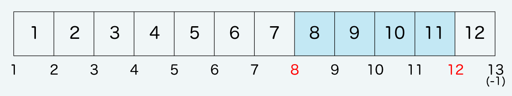
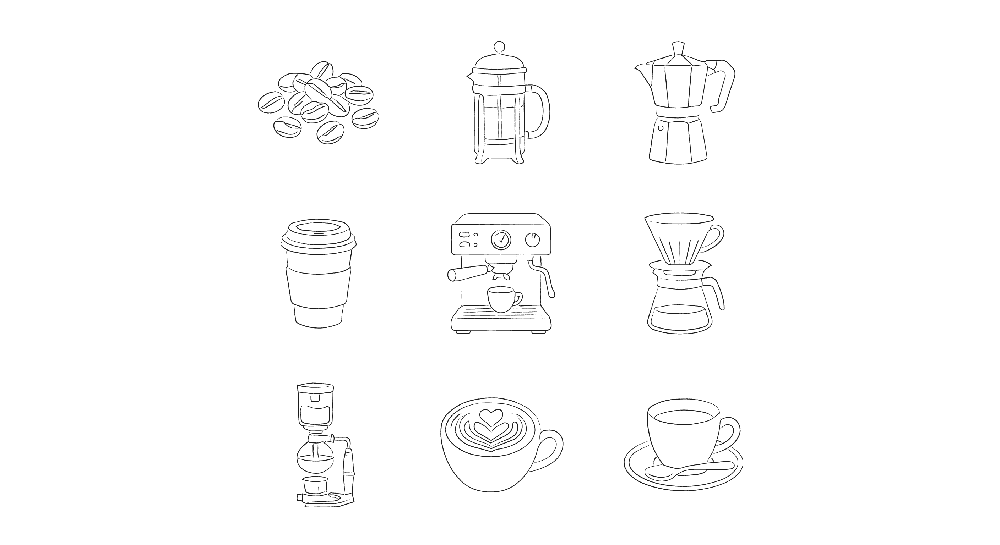
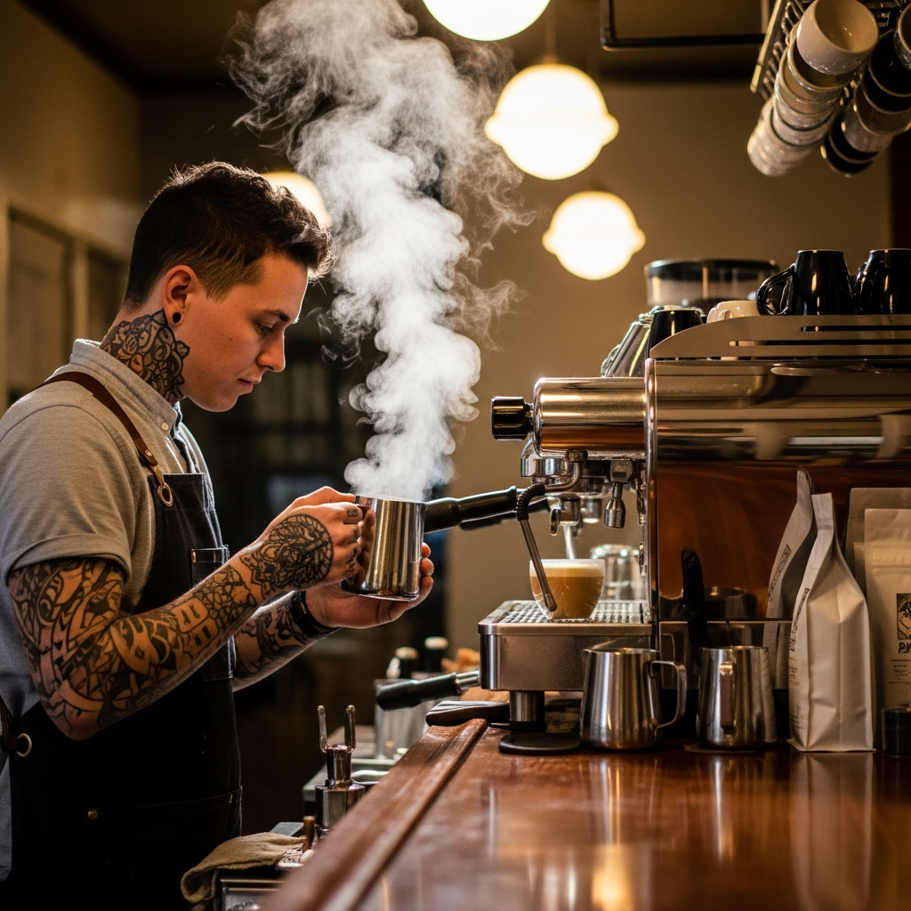

image-01と、text-01
画像が右側に配置、テキストは左側に配置されます。
※小さな端末ではhtml順のままで表示されます。
style.cssでimage-01（主に画像用）を検索すると、grid-column: 8 / 12;という箇所が出てきます。これは、8番目〜12番目のラインの間のマスを占める指定です。

すぐ下にあるtext-01（主にテキスト用）は、grid-column: 2 / 8;と書いてあるので、以下です。

titleタグの設定はとても重要です。念入りにワードを選んで適切に入力しましょう。
まず、htmlソースが見れる状態にして、
<title>シンプルで汎用的なレイアウトの無料首頁ページテンプレート tp_grid1</title>
を編集しましょう。
あなたの首頁ページ名が「Croissant」だとすれば、
<title>Croissant</title>
とすればＯＫです。SEO対策もするなら冒頭に重要なワードを入れておきましょう。
copyrightを変更しましょう。
続いてhtmlの下の方にある、
Copyright© 木光咖啡館 All Rights Reserved.
の部分も木光咖啡館に変更します。
metaタグを変更しましょう。
htmlソースが見える状態にしてmetaタグを変更しましょう。
ソースの上の方に、
content="ここにサイト説明を入れます"
という部分がありますので、テキストをサイトの説明文に入れ替えます。検索結果の文面に使われる場合もありますので、見た人が来訪したくなるような説明文を簡潔に書きましょう。
h1ロゴのaltタグも変更しましょう。
html側に、
alt="木光咖啡館"
となっている箇所があるので、この部分も木光咖啡館に変更しましょう。
imagesフォルダに入っていない画像（アイコン）は全てFont Awesomeの素材です。
Font Awesome 公式サイト
Font Awesome アイコン一覧
iタグを使ってhtmlに直接アイコンを読み込む場合と、cssの擬似要素を使って読み込む場合があります。
それぞれ他のアイコンに置き換えたい場合は、当サイトのマニュアルをお読み下さい。
Font Awesomeを使う為に必要なタグ、ファイル類。
cssフォルダのstyle.css冒頭で読み込んでいる「Font Awesomeの読み込み」のブロック。
何年も経過した場合、動作に問題が出てくる可能性があります。
テンプレートを編集していないのに突然動きがおかしくなった場合は、style.cssの冒頭でCDNから読み込んでいるFont Awesome関連のファイルのバージョンを変更して動作するか確認してみて下さい。
メインメニューは開閉ブロックタイプになります。
もし大きな端末でメインメニューを表示させておきたい場合は、jsフォルダのmain.jsの冒頭にある、
const breakPoint = 9999; // ここがブレイクポイント指定箇所です
の、9999の数値を小さくして下さい。
※メインメニューのcssは設定されていないので、ご自身で設定して下さい。
動作確認の際にあまりに素早い動作をされるとスクリプトが追いつかない場合があります。特にweb業者様など慣れている環境でテストされる際は、あくまで通常ユーザーの速度で試して下さい。
右から左（rtl）、左から右（ltr）への２タイプ使えます。
画像は縦長のものを準備して下さい。横長だと動きません。
imagesフォルダ内に、ポイントで使えるイラスト集（illust.aiとillust.png）を梱包しています。自由にご活用下さい。

色々なgridレイアウトを使う場合、必ず外枠に <div class="grid-box"> を入れて、その中に article を入れて下さい。
articleの中に、写真やテキストをセットします。

cssフォルダのstyle.cssの grid-template-columns: repeat(12, 1fr);という行です。
画像が右側に配置、テキストは左側に配置されます。
※小さな端末ではhtml順のままで表示されます。
style.cssでimage-01（主に画像用）を検索すると、grid-column: 8 / 12;という箇所が出てきます。これは、8番目〜12番目のラインの間のマスを占める指定です。

すぐ下にあるtext-01（主にテキスト用）は、grid-column: 2 / 8;と書いてあるので、以下です。
外側のarticleにclass="reverse"を追加すると、このように配置が逆になります。
※小さな端末ではhtml順のままで表示されます。
class="kazari"をつけてimgを配置するとこのようになります。配置場所は直接html側のインラインスタイル（style="〜〜"）に記載して下さい。基準点はtopかleftを使います。ここではtextブロックに入れていますが、imageブロックに入れてもOKです。


画像が左側に配置、テキストは画像の下に配置されます。
※小さな端末ではhtml順のままで表示されます。
image-02の方は、grid-column: 1 / 10;とあるので、1番目〜10番目のラインの間のマスを占める指定になります。
text-02の方は、grid-column: 2 / 10;となっています。テキストを1番目から開始すると左側の余白がなくなってキツキツなのであえて2番目からにしています。
外側のarticleにclass="reverse"を追加すると、このように配置が逆になります。
※小さな端末ではhtml順のままで表示されます。
こちらは上と異なり、左側に余裕があるので、テキストの開始地点を画像の左端とあわせています。

画像ブロックにimage-wideを指定した例です。
grid-column: 2 / 12;
幅いっぱいまで広がります。
imageとtextのデフォルトが適用されます。
imageの方は、grid-column: 1 / -1;です。「-1」というのは一番右端のラインという意味で、今回の場合は「13」と同じです。
textの方は、grid-column: 2 / 12;です。
補足ですが、imageやupやtextといったclassは全パターンでそのまま残しておいて下さい。upは下からフェードインしてくるアニメーションなので、効果が不要なら外しても構いません。